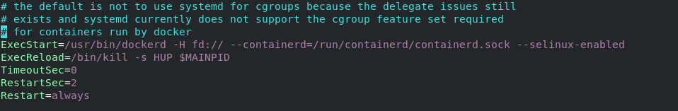
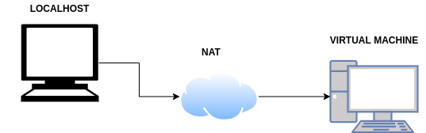

SELinux
Projecte ASIX
Gustavo Tello
SELinux: Que es?

Estructura

Sistema de etiquetado
- Se realiza desde el momento de la instalación del sistema operativo
- Una etiqueta siempre va asociada a un objeto
- Formato de etiqueta

Políticas y Reglas
- Dos tipos de políticas: Específica y Multinivel
- Las reglas solo negarán el acceso en el modo de operación Enforcing
- Una regla siempre va asociada a una etiqueta

Modos de Control y Operación I: Tipos de Control
- Control de Acceso Discrecional(DAC)
- SELinux:
- Control de Acceso Obligatorio(MAC)
- (MAC) basado en etiquetas
- Control de Acceso Basado en Roles(RBAC)
Modos de Control y Operación II: Modos de Operación
- Enforcing: Permite o niega el acceso a objetos guiándose por las reglas definidas por defecto
- Permissive: No realiza ninguna acción de denegación, solo registra las acciones no permitidas en los logs del sistema
- Disabled: No se recomienda utilizar este modo si luego queremos activar SELinux
SELinux vs Firewall
- No es un firewall
- Se puede considerar complementario a un firewall
- Diferencias

Estructura proyecto: Problema Docker I


Estructura proyecto: Problema Docker II


Estructura proyecto: Solución KVM
- Solución para implementar virtualización completa con Linux

Estructura proyecto: Como lo tengo montado?

Y eso es todo!